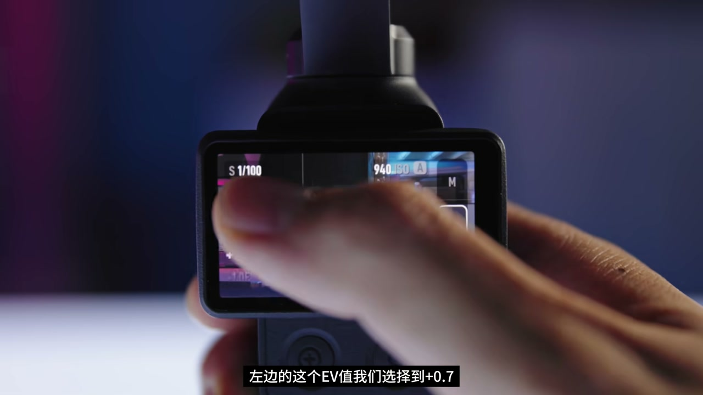
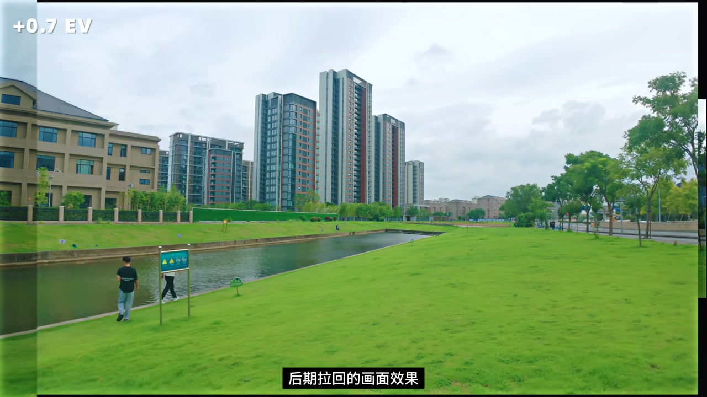
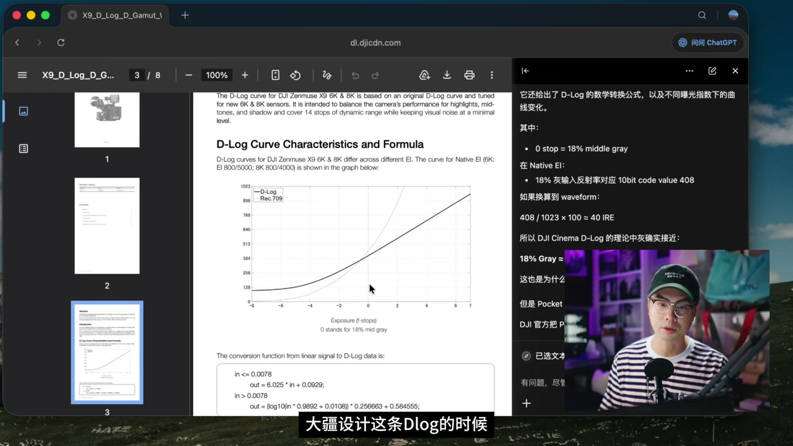
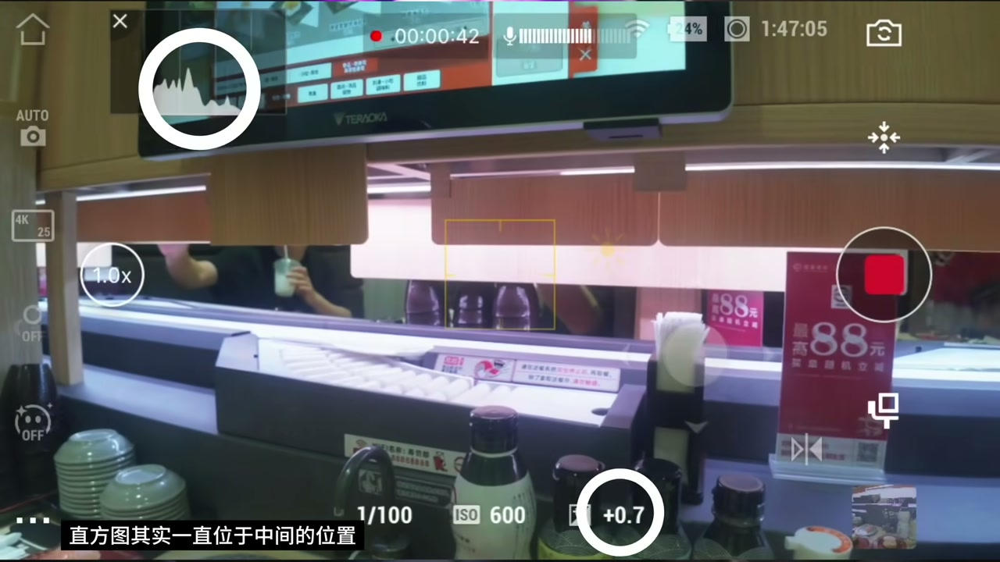
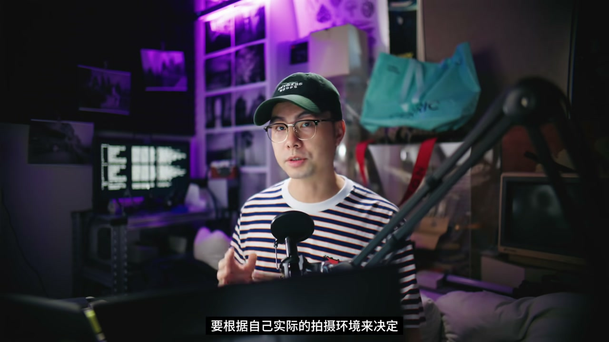

内容要点
李宇辰针对「Pocket 4／4P 的 D-Log 看起来普通」给出机内解法：曝光菜单选 Auto，把 EV 调到 +0.7，等于向右曝光一点；后期再稍稍压暗，高光白云保留、暗部更干净通透。他用如影 4D 文档里中灰约 41.2% 类比索尼 S-Log3，说明这条曲线本就该向右曝；实战直方居中健康，默认则偏左欠曝拉脏。0.7 是他在小底上的甜蜜点（不敢跟到 S-Log3 的 1.7），并声明主观；4P 因高光余量更大或可再往右，但他没机器需自行测。
知识结构
Auto＋EV+0.7：D-Log 向右曝一点，素材更亮。
+0.7 拉回通透；默认暗部噪点显脏。
中灰≈41.2% 近 S-Log3，应向右曝再回拉净暗部。
直方居中健康；0.7 甜蜜点，勿过到 1.7。
4P 或可更右；主观结论＋LUT 预告。
Pocket 4 拍 D-Log：先试 EV+0.7 向右曝光，后期压回；小底别照搬 S-Log3 的 1.7，高光拉不回来就白干。
00:00-00:46机内一步：曝光 Auto，EV 拉到 +0.7
开场点题：Pocket 4／4P 画面普通、货不对版，往往是参数没调对。李宇辰的做法是把曝光补偿加到 +0.7，让 D-Log「向右曝光一点」，画面更通透干净。
操作：右侧滑出菜单→曝光→Auto，左侧 EV 选 +0.7。00:32 触屏特写是可指认证据；这样拍比默认更亮，后期再稍稍压暗就能得到均衡效果。

00:46-01:18+0.7 拉回更通透，默认更脏
先看过曝 0.7 档再拉回的结果：天空白云高光细节还在，暗部相对干净，整体有空气感。00:50 外景角标「+0.7 EV」对应「后期拉回的画面效果」。
默认值因暗部噪点显得更脏——这可能就是你的 Pocket 4 和别人、和官方样片差一截的原因。

01:18-02:18为什么大疆 D-Log 也要向右曝
作者称未找到 Pocket 4 专用白皮书，但如影 4D 文档写明 D-Log 把中灰曝光设在约 41.2%，与索尼描述 S-Log3 的 18% 灰约 41% 很接近，曲线重合度高。
摄影圈都知道 S-Log3 要向右曝光；据此拼出结论——大疆这条 D-Log 也应向右一点，再用后期回拉让暗部更纯净。01:35 文档画面可核。

02:18-03:23实战直方与 0.7 甜蜜点
美式探店、暗光 Vlog、台风天等场景带 +0.7 自动过曝：直方大致居中「健康」；官方默认则稍靠左＝欠曝，Log 欠曝一拉就脏、颜色不对。
为何不是 S-Log3 那档 1.7？小底过曝太多高光可能拉不回，他主观觉得 0.7 更稳，并强调按环境自测。02:35 直方对比是证据。

03:23-04:084P 或可更右；主观边界与 LUT 预告
补充：4P 的 D-Log2 用 Lofic，高光据说多约三档，动态优化偏高光，理解上可以向右再多一点——但作者没这台机器，只能观众自测。
收束重申全是个人主观看法；并预告一系列生活化 D-Log 还原 LUT。03:30 附近对应片尾。

完整转录（145段）
以下文本由 Whisper medium 模型自动转录，可能存在少量识别误差，已尽可能修正。
如果你觉得你手里面的Pocket 4或者是4P拍出来的画面很普通
根本没有网上宣传的那么好
甚至有点货不对版的感觉
那有可能是你机器的这个参数调整的不对
那如果你想我一样
将这个曝光参数调整为加0.7
就可以让你D-Log的画面更加的通透干净
换句话说Pocket 4的D-Log就是要向右曝光一点
好的大家好
我是李宇辰
首先我们来看看机内如何设置这个参数
打开机器右边滑出菜单栏
在曝光这里点进去
右边选择Auto
关键就是这一步
左边的这个EV值我们选择到加0.7
简简单单的操作
这样的一个拍摄模式得到的素材
会比默认值拍出来的画面更亮一些
后期我们拿到素材之后
只需要稍稍的把曝光往暗了拉一点
就能得到一个非常均衡且漂亮的画面效果
首先是我这个过曝0.7档拍摄
后期拉回的画面效果
可以看到天空的白云高光的细节
也得到了正确的保留
看着还是非常舒服的
画面的暗部也是相对更干净一些
使得整体画面的观感
就是有一种通透感 空气感
默认值拍摄的这个画面
由于暗部噪点的问题
就会显得更加的脏
所以这个点可能就是你的Poke4
和其他人的Poke4
拍出来为什么有不一样的区别
以及网上为什么那些博主
或者是摄影的那些官方账号
拍出来的画面
就会更加的干净通透一些
好 我们来看一下为什么大疆的D-Log
要进行这样一个过曝的操作
我当然是没有找到大疆
对于Poke4的D-Log曲线的白皮书
但是我找到了当初
他们发布电影机如影4D的时候
因为这个机器是面向专业的创作者
所以他们必须要把D-Log这个曲线
讲得比较通透
我们可以看到文件里面有写
大疆设计这条D-Log的时候
把中挥曝光值设定在41.2%
这是什么意思呢
其实你不用明白
你只需要知道
索尼的S-Log3
官方在描述它曝光指数的时候
18度中挥也是41%
非常的相似
所以理论上来说
D-Log这条曲线
跟索尼的S-Log3的这条曲线
应该具有相似的曝光的手法
这两条Log曲线的重合度
非常非常的高
那摄影老肯定都知道
S-Log3就是需要向右曝光的
这个我们之前已经出过一期节目了
所以从以上这些不完整的
但是比较官方的信息
可以拼凑出来一个结论
就是说大疆的这一条D-Log曲线
就是应该向右曝光一些
才能够通过后期回拉的方式
让暗部噪点变得更加纯净
但是以上都是理论值
所以我为了进一步验证
最近很长一段时间里面
都会带着这样的一套出装出门
假设拍摄美式探店
暗光环境拍Vlog
或者是台风天到处溜达
等等一切来给大家假设出来的
使用这台机器拍摄的场景
可以看到使用了自动过曝0.7档之后
直方图其实一直位于中间的位置
显示是非常健康的一个水平
通过后期压按之后
也能得到一个漂亮的
不错的通透的画面效果
反而是使用了官方默认的
这种曝光方式之后
可以看到直方图
有点稍稍靠左了一点
靠左就意味着有点欠曝了
所以大家懂得Log素材
一旦欠曝拉回
画面就会显得有点脏脏的
并且颜色有点不对劲
所以虽然官方没有给出
Poke4这台机器
标准的Dlog的白皮书
但是通过这些理论以及我的实践
我们似乎可以得出一个结论
就是Dlog
也是需要向右曝光一点的
但至于为什么是0.7这个数值
而不是Slog3的那个1.7
主要是我实践下来
觉得说这台机器毕竟是个小底
如果你过曝太多
到了1.7的这个程度
你很有可能高光是拉不回来的
所以就稍微稳了一手
我觉得说0.7可能是一个比较好的甜蜜点
当然以上全是我个人的
非常主观的看法以及结论
大家如果真的想要使用
这种向右曝光的手法
要根据自己实际的拍摄环境来决定
那我们多说一句
关于4P的这个Dlog2
之前我们已经有聊过
4P是使用了Lofic技术
所以它的高光
会比普通的这种机器要多了三档
它的动态范围优化
也都是给到了高光
所以在我的理解来看
4P的向右曝光可以再往右一点
不过我没有这台机器
所以就只有靠大家自己去测试了
最近拿着这台机器拍摄
我觉得效果非常非常好
很方便
所以我决定给它出一系列的Dlog的还原LUT
方便大家能够更好的调出生活化的
但是好看的颜色的那些LUT
预告一下
大家可以期待一下
好那么本期的分享就到这里了
我是滴滴滴
我们下次再见
Respect
拜拜